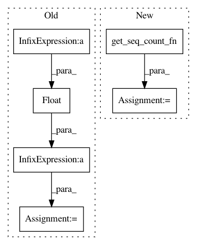

6153b5f46390b1112c333647102ca0c715e0a062,finetune/util/metrics.py,,micro_f1,#Any#Any#Any#,148
Before Change
FN += len(counts["false_negatives"])
TP += len(counts["correct"])
FP += len(counts["false_positives"])
recall = TP/float(FN + TP)
precision = TP / float(FP + TP)
try:
f1 = 2 * (recall * precision) / (recall + precision)
except ZeroDivisionError:
return 0.0
return f1
After Change
def micro_f1(true, predicted, span_type="token"):
count_fn = get_seq_count_fn(span_type)
class_counts = count_fn(true, predicted)
TP, FP, FN = 0, 0, 0
for cls_, counts in class_counts.items():
FN += len(counts["false_negatives"])
In pattern: SUPERPATTERN
Frequency: 3
Non-data size: 6
Instances
Project Name: IndicoDataSolutions/finetune
Commit Name: 6153b5f46390b1112c333647102ca0c715e0a062
Time: 2020-04-14
Author: jerry.genser@indico.io
File Name: finetune/util/metrics.py
Class Name:
Method Name: micro_f1
Project Name: IndicoDataSolutions/finetune
Commit Name: 6153b5f46390b1112c333647102ca0c715e0a062
Time: 2020-04-14
Author: jerry.genser@indico.io
File Name: finetune/util/metrics.py
Class Name:
Method Name: seq_precision
Project Name: IndicoDataSolutions/finetune
Commit Name: 6153b5f46390b1112c333647102ca0c715e0a062
Time: 2020-04-14
Author: jerry.genser@indico.io
File Name: finetune/util/metrics.py
Class Name:
Method Name: seq_recall